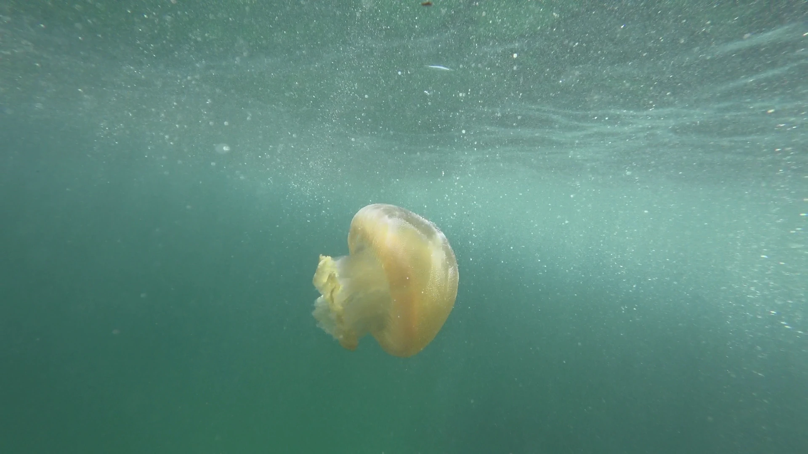

High Tide visual assets and art direction
Media manifest
Files are bundled with the presentation under site/dist/assets/. Source images, licenses and credits were checked on 10 November 2026. All aquarium imagery is illustrative. The species reference shows an Australian observation, and the satellite plate provides historical regional context.
| Local file | Source and credit | Use and preparation |
|---|---|---|
jelly-motion.mp4 |
Eline SUN, Jellyfish in the dark blue water, Pexels item 16482908 · Pexels license | Atmospheric opening, preferably a tall frame to preserve the composition. The animals are identified only as aquarium jellyfish. The 1080 × 1920 source was trimmed to a 12-second excerpt, scaled to 720 × 1280, reduced to 30 fps, muted, and encoded as H.264 with fast-start metadata. Pexels permits presentation and website use and modification. Credit is optional and supplied here. |
jelly-motion-poster.webp |
Eline SUN, still from the above Pexels clip · Pexels license | Matching 720 × 1280 first-load or reduced-motion image, extracted from the excerpt and encoded as WebP. |
jelly-macro.webp |
Jen Theodore, A close-up of a jellyfish in the water, Unsplash source · Unsplash license | Detailed aquarium macro with luminous cyan filaments against dark blue. 2300 × 1725 WebP, resized/re-encoded from the source. The presentation may crop it with object-fit to suit the frame. Unsplash permits commercial and non-commercial use and adaptation. Credit is optional and supplied here. |
catostylus-reference.webp |
Andrew Harvey, Blue Blubber Jelly (Catostylus mosaicus), Wikimedia Commons · iNaturalist observation · CC BY 4.0 | Scientific species reference observed in Australia in 2019. Re-encoded at the original 1920 × 1080 dimensions. Include source, creator, license and the re-encoding note in any distributed version. Use as a species example. ENEC's challenge identification and local taxonomy remain separately sourced. |
uae-coast-landsat.webp |
Jesse Allen and Robert Simmon / NASA Earth Observatory, using USGS/NASA Landsat data. Mangroves, Domes, and Flats on the UAE Coast · NASA Landsat reuse guidance | Regional coastal context captured 18 September 2001. The public-domain 4928 × 3285 official image was resized and re-encoded to 2240 × 1493 WebP. This scene depicts Abu Dhabi and coastline to the west. Present as historical regional imagery, with any modern Barakah geometry shown separately as a schematic. |
vg5000.woff2 and vg5000-OFL.txt |
VG5000 by Justin Bihan / Velvetyne, SIL Open Font License 1.1. Existing BatLabs webfont copied without modification. | 42 guide display face. Preserve the accompanying license. |
jost-400.woff2, jost-500.woff2 and jost-OFL.txt |
The Jost Project Authors, SIL Open Font License 1.1. Existing BatLabs webfonts copied without modification. | BatLabs uses Jost as its open geometric text face. Futura PT is specified in the guide, so prefer an authorised Futura installation where available and use the bundled Jost as the consistent fallback. Preserve the accompanying license. |

Credit line ready for the deck: “Aquarium footage by Eline SUN via Pexels. Aquarium macro by Jen Theodore via Unsplash. Blue blubber jelly by Andrew Harvey, CC BY 4.0, re-encoded. UAE coast by NASA Earth Observatory / USGS Landsat, 2001, resized.” Keep each source and the CC license clickable in the credits.
42 Abu Dhabi guide
Local source: 42 Abu Dhabi Style Guide. The similarly named duplicate in Downloads has an identical SHA-256. The PDF consists of 21 pages. Page references below use the PDF page count.
- Palette (p. 6). Digital swatches are coral
#FF5A3C, purple#730FFF, cyan#00EBFFand charcoal#414141. The guide prints an inconsistent RGB triplet under the charcoal swatch, so use its written HEX and the visual swatch. Its pairing examples include charcoal with cyan or coral, purple with cyan or coral, and charcoal with purple. Use charcoal/cyan for the water and model chapters and charcoal/coral for decisions and the closing ask. Keep white as a neutral. The style guide's print palette is separate. - Typography (p. 10). VG5000 is the expressive Latin headline face. The communication face is Futura PT, with IBM Plex Arabic for Arabic. Selectively use code-format typography, accent colour or one available alternate glyph in the display face. Use sentence-case prose with restrained spacing so the projected copy reads quickly.
- Pattern (pp. 7–9). The guide’s pattern families draw on map geometry, Ghutra textiles and Arabic letter forms. It illustrates cropping, tilting, deconstructing and containing a single pattern in a shape. Use one angular vocabulary, echoing the High Tide moodboard’s coral geometry, and give it generous margins.
- Iconography and windows (pp. 11–12). Use simple monochrome pixel-like icons and small terminal or popup frames for purposeful details such as lab evidence, citations and extended judging questions. Avoid outlined or stretched icons, mixed icon styles and drop shadows.
- Photography (p. 13). The guide calls for monochrome photography when integrated with the branded design. Keep natural-colour specimens, footage and satellite imagery in clearly bounded media panels and use monochrome if compositing photos with the graphic pattern. This separates the scientific media from the 42-inspired presentation chrome.
- Restraint (pp. 19–20). Avoid glitch effects, stacked boxing styles, shaded or outlined text, mixed pattern families, and more than two guide colours per composition. These constraints still leave room for motion through a single depth change, sharp crop, masked reveal or restrained typography transition.
- Identity. The guide's cover and 42 Abu Dhabi’s official handbook show the campus mark with the Arabic and English lockup. The deck can identify the team as “42 Abu Dhabi” in text. A campus or ENEC lockup requires an authorised source asset, with its proportions and typography preserved. The materials here do not confer an institutional endorsement.
Art and motion references
- The supplied High Tide moodboard combines a giant marine specimen crop, large geometric display type, coral angular geometry and negative space. The prior BatLabs prototype poster treats engineering diagrams differently, with a paper grid, charcoal transport area, cyan exit traces and explicit geometry labels. Carry the contrast across the pitch. A photographic opener can give way to a quieter, more inspectable assay and transport chapter.
- UTRGV’s A Classroom in the Ocean uses a progressive descent from surface footage into scientific specimens. Its 2026 CASE award entry describes how the scroll movement conveys depth. Translate the idea to presentation controls by revealing one scientific layer at a time and keeping deeper detail behind an explicit interaction.
- Monterey Bay Aquarium’s Into the Deep offers a progression from a darkening threshold to specimen detail, an interactive topographic model and a resurfacing moment. High Tide can use a similarly legible shift from an animal at scale to chemistry, water motion and the final decision. The aquarium assets themselves are not included.
- Nereus by Zolarys demonstrates high-contrast type, asymmetric framing and restrained ambient motion in a deep-ocean story. Use it as a composition and transition reference. The deck's content and artwork remain sourced independently.


